library(readxl)
library(lme4)
library(lmerTest)
library(showtext)
library(viridis)
library(chisq.posthoc.test)
library(Hmisc)
library(gt)
library(webshot2)
library(tidyverse)
showtext_auto()02 SEAS Study 1 Explanatory Analyses
Analyses exploring children’s open-ended justifications for their selections in SEAS Study 1.
Note: The path specified in the data load command (in line 39 of data-load chunk) may need to be modified depending on your operating system and local environment set-up in order to function properly.
Packages
Data Preparation
magma_colors <- c("#000004FF", "#180F3EFF", "#451077FF", "#721F81FF", "#9F2F7FFF", "#CD4071FF", "#F1605DFF", "#FD9567FF", "#FEC98DFF", "#FCFDBFFF") #from magma(10)
wo_black <- viridis::magma(20)[5:20]seas_full <- read_excel("../../Data/FINAL SEAS V1 Dataset.xlsx")
seas <- filter(seas_full, final_data == "Y") #filtering out excluded participants#Combining any explanation code for a particular response
seas_united <- seas |>
unite("status_explain_1", status_storyref_1:status_relation_1, sep = " ", na.rm = TRUE) |>
unite("resource_explain_1", resource_storyref_1:resource_relation_1, sep = " ", na.rm = TRUE) |>
unite("status_explain_2", status_storyref_2:status_relation_2, sep = " ", na.rm = TRUE) |>
unite("resource_explain_2", resource_storyref_2:resource_relation_2, sep = " ", na.rm = TRUE) |>
unite("status_explain_3", status_storyref_3:status_relation_3, sep = " ", na.rm = TRUE) |>
unite("resource_explain_3", resource_storyref_3:resource_relation_3, sep = " ", na.rm = TRUE) |>
unite("status_explain_4", status_storyref_4:status_relation_4, sep = " ", na.rm = TRUE) |>
unite("resource_explain_4", resource_storyref_4:resource_relation_4, sep = " ", na.rm = TRUE)#Creating a general explanation mapping function
individual_explain_func <- function(status_or_resource, trial_num) {
possible_explain <- c("ST", "VG", "SG", "EX", "IN", "NR", "MR", "AR", "EP", "EN", "PR", "EM", "MT", "FR", "PS", "OR")
column_of_interest <- paste0(status_or_resource, "_explain_", trial_num)
list_of_dfs <- purrr::map(possible_explain, function(explain) {
seas_united |>
mutate(!!paste0(status_or_resource, "_", explain, "_", trial_num) := if_else(str_detect(.data[[column_of_interest]], explain), 1, 0))
})
selected_cols <- map(list_of_dfs, ~select(., subject, last_col()))
reduce(selected_cols, left_join, by = "subject")
}#Gathering individual explanation columns for each response
seas_status_1 <- individual_explain_func("status", 1)
seas_resource_1 <- individual_explain_func("resource", 1)
seas_status_2 <- individual_explain_func("status", 2)
seas_resource_2 <- individual_explain_func("resource", 2)
seas_status_3 <- individual_explain_func("status", 3)
seas_resource_3 <- individual_explain_func("resource", 3)
seas_status_4 <- individual_explain_func("status", 4)
seas_resource_4 <- individual_explain_func("resource", 4)
#Combining back into one dataframe
seas_separated <- seas_united |>
left_join(seas_status_1, by = "subject") |>
left_join(seas_resource_1, by = "subject") |>
left_join(seas_status_2, by = "subject") |>
left_join(seas_resource_2, by = "subject") |>
left_join(seas_status_3, by = "subject") |>
left_join(seas_resource_3, by = "subject") |>
left_join(seas_status_4, by = "subject") |>
left_join(seas_resource_4, by = "subject")#Creating sum scores for each type of explanation
seas_separated <- seas_separated |>
rowwise() |>
mutate(
ST_total = sum(c_across(matches(".*_ST_."))),
VG_total = sum(c_across(matches(".*_VG_."))),
SG_total = sum(c_across(matches(".*_SG_."))),
EX_total = sum(c_across(matches(".*_EX_."))),
IN_total = sum(c_across(matches(".*_IN_."))),
NR_total = sum(c_across(matches(".*_NR_."))),
MR_total = sum(c_across(matches(".*_MR_."))),
AR_total = sum(c_across(matches(".*_AR_."))),
EP_total = sum(c_across(matches(".*_EP_."))),
EN_total = sum(c_across(matches(".*_EN_."))),
PR_total = sum(c_across(matches(".*_PR_."))),
EM_total = sum(c_across(matches(".*_EM_."))),
MT_total = sum(c_across(matches(".*_MT_."))),
FR_total = sum(c_across(matches(".*_FR_."))),
PS_total = sum(c_across(matches(".*_PS_."))),
OR_total = sum(c_across(matches(".*_OR_."))),
) |>
ungroup() #Pivoting explanation type
seas_pivoted <- seas_separated |>
pivot_longer(ST_total:OR_total, names_to = "explanation_type", names_pattern = "(..)_total", values_to = "total")#Some exploration of frequency of each type of explanation
seas_pivoted |>
group_by(explanation_type) |>
dplyr::summarize(
max = max(total),
min = min(total),
mean = mean(total)
)# A tibble: 16 × 4
explanation_type max min mean
<chr> <dbl> <dbl> <dbl>
1 AR 5 0 0.34
2 EM 4 0 0.14
3 EN 1 0 0.01
4 EP 2 0 0.11
5 EX 4 0 0.21
6 FR 4 0 0.52
7 IN 1 0 0.02
8 MR 0 0 0
9 MT 2 0 0.15
10 NR 1 0 0.02
11 OR 3 0 0.1
12 PR 8 0 0.16
13 PS 3 0 0.6
14 SG 8 0 2.71
15 ST 6 0 0.66
16 VG 5 0 0.9 Basic Answer Categorization
Graphs
seas_answer_col <- seas |>
pivot_longer(
cols = contains("response"),
names_to = "trial",
values_to = "response"
) |>
ggplot(aes(x = as.factor(age), fill = fct_rev(response))) +
geom_bar(position = "fill") +
scale_fill_manual(
values = c(magma_colors[7], magma_colors[5], magma_colors[3]),
labels = c("Relevant Answer", "No or Irrelevant Answer", "Missing")
) +
labs(
title = "Study 1 Explanations Given by Age",
x = "Age (Years)",
y = "Proportion",
fill = NULL
) +
theme_minimal() +
theme(
plot.title = element_text(hjust = 0.5, size = 30),
legend.title = element_text(size = 20),
legend.text = element_text(size = 15),
legend.position = "top",
text = element_text(family = "serif", size = 25)
)
seas_answer_col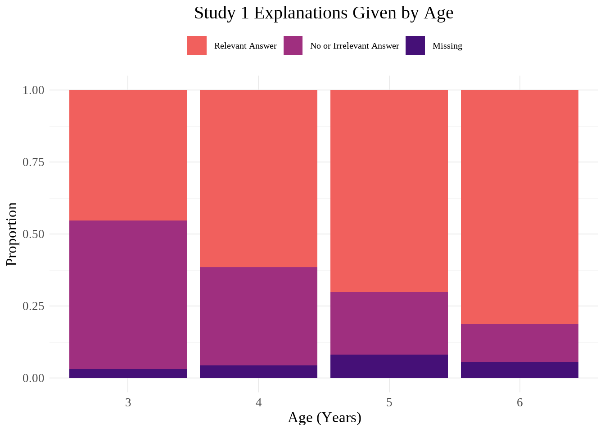
Analyses
seas_response <- seas |>
pivot_longer(
cols = contains("response"),
names_to = "trial",
values_to = "response"
)
seas_response_table <- xtabs(~response + age, data = seas_response)
seas_response_chi <- chisq.test(seas_response_table)
seas_response_chi
Pearson's Chi-squared test
data: seas_response_table
X-squared = 80.149, df = 6, p-value = 3.329e-15seas_response_posthoc <- chisq.posthoc.test(seas_response_table, method = "bonferroni")
seas_response_posthoc Dimension Value 3 4 5 6
1 MS Residuals -1.585748 -0.7791423 2.080096 0.2496085
2 MS p values 1.000000 1.0000000 0.450201 1.0000000
3 NA Residuals 7.478823 1.5126598 -3.060498 -5.8891219
4 NA p values 0.000000 1.0000000 0.026516 0.0000000
5 RA Residuals -6.419982 -1.0822784 1.952147 5.5265865
6 RA p values 0.000000 1.0000000 0.611049 0.0000000seas_response_posthoc <- seas_response_posthoc |>
rename(
three = `3`,
four = `4`,
five = `5`,
six = `6`
)A chi-square square test of independence found that there was a difference across age groups for the overall type of response participants gave to explanation questions (no or irrelevant answer, relevant answer, or missing data). Chi-squared = 80.15, df = 6, p = 3.3^{-15}.
A post-hoc test with Bonferroni correction found no differences in whether the response data was missing across age (p3 = 1, p4 = 1, p5 = 0.45, p6 = 1). There were significant differences in no/irrelevant responses and relevant responses. For no/irrelevant responses, ages 3, 5, and 6 were significant while 4 was not (p3 = 0, p4 = 1, p5 = 0.027, p6 = 0). The standardized residuals demonstrate that this difference stems from 3-year olds having a greater number of no/irrelevant responses and 5- and 6-year olds having fewer than would be expected. (residual3 = 7.48, residual5 = -3.06, residual6 = -5.89). As might be expected, relevant answers show the opposite pattern, with 6-year-olds having a greater number and 3-year-olds having a fewer number–though, note that 5-year-olds are not significant for this category (p3 = 0, residual3 = -6.42; p6 = 0, residual6 = 5.53).
Number of Times a Ppt Used Explanation Across Each Response (0-8)
Initial Graphs
#Column chart to see the total number of each type of explanation category participants used across their 8 explanation questions (explain better; can use multiple types of explanation in one response, but using that explanation in response will only be counted once for each question--i.e. maximum for each category is 8)
seas_pivoted |>
ggplot(aes(x = as.factor(age), y = total, fill = explanation_type)) +
geom_col()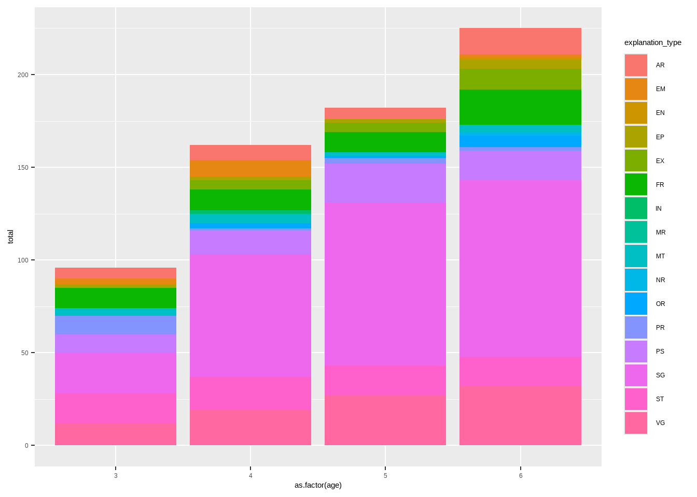
seas_pivoted |>
mutate(
explanation_type = fct_relevel(explanation_type, "ST", "VG", "SG", "EX", "IN", "NR", "MR", "AR", "EP", "EN", "PR", "EM", "MT", "FR", "PS", "OR")) |>
ggplot(aes(x = age_months, y = total, color = explanation_type, fill = explanation_type)) +
geom_jitter() +
geom_smooth(method = "glm", alpha = 0.2) +
facet_wrap(~explanation_type) +
scale_fill_manual(values = wo_black) +
scale_color_manual(values = wo_black) +
labs(
title = "Study 1 Frequency of Explanation Types",
x = "Age (Months)",
y = "Responses to Explanation Questions",
color = "Explanations",
fill = "Explanations"
) +
theme_minimal() +
theme(
plot.title = element_text(hjust = 0.5, size = 30),
legend.title = element_text(size = 20),
legend.text = element_text(size = 15),
text = element_text(family = "serif", size = 25)
)`geom_smooth()` using formula = 'y ~ x'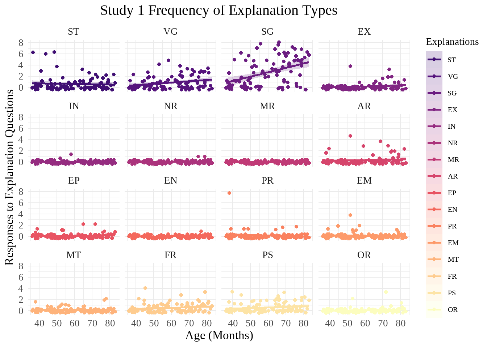
GLMMs
Exclusion
#Does the frequency of explanations that reference exclusion change with age?
seas_EX_count_age <- glm(
EX_total ~ age_months,
data = seas_separated
)
summary(seas_EX_count_age)
Call:
glm(formula = EX_total ~ age_months, data = seas_separated)
Coefficients:
Estimate Std. Error t value Pr(>|t|)
(Intercept) -0.382057 0.279218 -1.368 0.1743
age_months 0.009941 0.004568 2.176 0.0319 *
---
Signif. codes: 0 '***' 0.001 '**' 0.01 '*' 0.05 '.' 0.1 ' ' 1
(Dispersion parameter for gaussian family taken to be 0.3950898)
Null deviance: 40.590 on 99 degrees of freedom
Residual deviance: 38.719 on 98 degrees of freedom
AIC: 194.9
Number of Fisher Scoring iterations: 2summary(seas_EX_count_age)$coefficients[2,4] * 2 #Bonferroni corrected p[1] 0.06387623The number of explanations that reference exclusion given by participants intitially appears to significantly differ by age, t = 2.18, p = 0.032, such that older participants are more likely to use a higher frequency of EX explanations, but is not significant when a Bonferroni correction for multiple comparisons is applied (p = 0.064).
#Does whether a response references exclusion depend on the question type (status or resources), age, or the interaction thereof?
seas_EX_qtype <- seas_separated |>
select(subject, age_months, matches(".*_EX_.")) |>
pivot_longer(
cols = -(subject:age_months),
names_to = "question_type",
names_pattern = "(.*)_EX_.",
values_to = "EX"
)
summary(glm(
EX ~ question_type * age_months,
data = seas_EX_qtype
))
Call:
glm(formula = EX ~ question_type * age_months, data = seas_EX_qtype)
Coefficients:
Estimate Std. Error t value Pr(>|t|)
(Intercept) -0.0244420 0.0353352 -0.692 0.489
question_typestatus -0.0466302 0.0499714 -0.933 0.351
age_months 0.0007462 0.0005780 1.291 0.197
question_typestatus:age_months 0.0009928 0.0008175 1.214 0.225
(Dispersion parameter for gaussian family taken to be 0.02530939)
Null deviance: 20.449 on 799 degrees of freedom
Residual deviance: 20.146 on 796 degrees of freedom
AIC: -664.97
Number of Fisher Scoring iterations: 2Neither question type, age, nor the interaction between the two significantly affects whether an answer references exclusion or not.
EX_count_age_scatter <- seas_separated |>
ggplot(aes(x = age_months, y = EX_total)) +
geom_jitter() +
geom_smooth(
method = "glm",
formula = y ~ x,
color = magma_colors[3],
fill = magma_colors[5],
alpha = 0.25) +
labs(
title = "Study 1 Explanations Referencing Exclusion by Age",
x = "Age (Months)",
y = "Explanations Referencing Exclusion"
) +
theme_minimal() +
theme(
plot.title = element_text(hjust = 0.5, size = 30),
text = element_text(family = "serif", size = 25)
) +
coord_cartesian(ylim = c(0,8)) +
scale_y_continuous(breaks = c(0, 2, 4, 8))
EX_count_age_scatter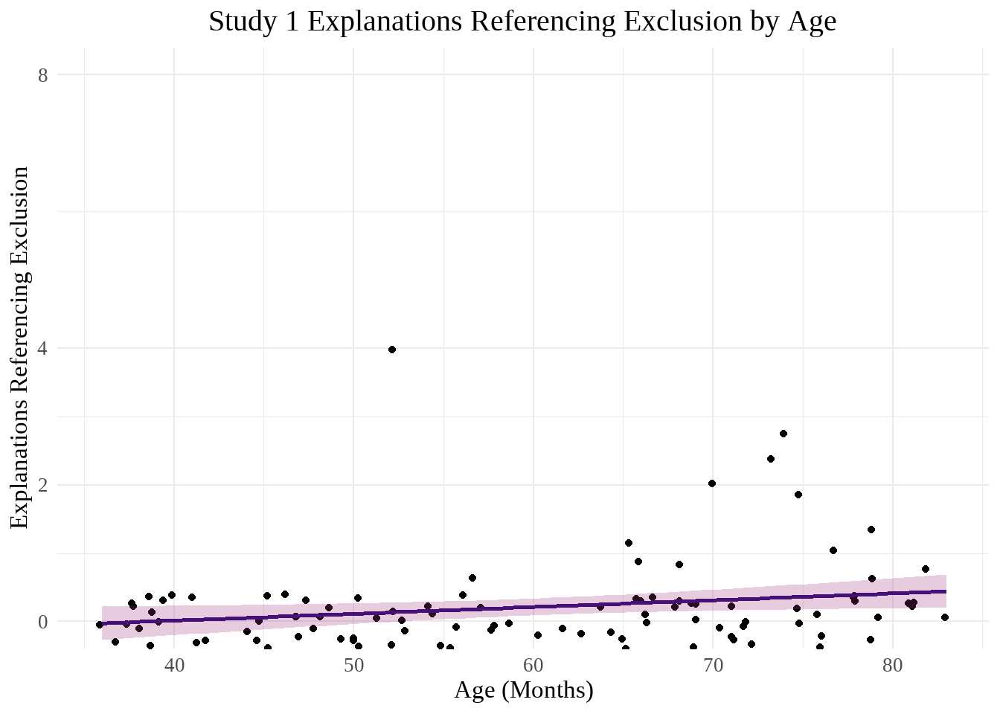
Specific Game
#Does the frequency of explanations that reference the game specifically change with age?
seas_SG_count_age <- glm(
SG_total ~ age_months,
data = seas_separated
)
summary(seas_SG_count_age)
Call:
glm(formula = SG_total ~ age_months, data = seas_separated)
Coefficients:
Estimate Std. Error t value Pr(>|t|)
(Intercept) -1.97085 1.01499 -1.942 0.055 .
age_months 0.07859 0.01660 4.733 7.44e-06 ***
---
Signif. codes: 0 '***' 0.001 '**' 0.01 '*' 0.05 '.' 0.1 ' ' 1
(Dispersion parameter for gaussian family taken to be 5.220699)
Null deviance: 628.59 on 99 degrees of freedom
Residual deviance: 511.63 on 98 degrees of freedom
AIC: 453.03
Number of Fisher Scoring iterations: 2summary(seas_SG_count_age)$coefficients[2,4] * 2 #Bonferroni corrected p[1] 1.488981e-05confint(seas_SG_count_age, method = "Wald", parm = "age_months") #fixed effect confidence intervalWaiting for profiling to be done... 2.5 % 97.5 %
0.04604725 0.11113375 exp(coef(seas_SG_count_age)) #odds ratio(Intercept) age_months
0.1393383 1.0817612 The number of explanations that reference the game with specific details given by participants does significantly differ by age, t = 4.73, p = 7.4^{-6}, and remains significant after correction (p = 1.5^{-5}).
#Does whether a response references the game specifically depend on the question type (status or resources), age, or the interaction thereof?
seas_SG_qtype <- seas_separated |>
select(subject, age_months, matches(".*_SG_.")) |>
pivot_longer(
cols = -(subject:age_months),
names_to = "question_type",
names_pattern = "(.*)_SG_.",
values_to = "SG"
)
summary(glm(
SG ~ question_type * age_months,
data = seas_SG_qtype
))
Call:
glm(formula = SG ~ question_type * age_months, data = seas_SG_qtype)
Coefficients:
Estimate Std. Error t value Pr(>|t|)
(Intercept) -0.320062 0.100694 -3.179 0.00154 **
question_typestatus 0.147411 0.142402 1.035 0.30090
age_months 0.011502 0.001647 6.983 6.11e-12 ***
question_typestatus:age_months -0.003356 0.002330 -1.441 0.15003
---
Signif. codes: 0 '***' 0.001 '**' 0.01 '*' 0.05 '.' 0.1 ' ' 1
(Dispersion parameter for gaussian family taken to be 0.2055284)
Null deviance: 179.2 on 799 degrees of freedom
Residual deviance: 163.6 on 796 degrees of freedom
AIC: 1010.6
Number of Fisher Scoring iterations: 2Whether an answer references the game specifically is significantly associated with age but not question type nor an interaction between age and question type.
SG_count_age_scatter <- seas_separated |>
ggplot(aes(x = age_months, y = SG_total)) +
geom_jitter() +
geom_smooth(
method = "glm",
formula = y ~ x,
color = magma_colors[3],
fill = magma_colors[5],
alpha = 0.25) +
labs(
title = "Study 1 Explanations Referencing the Game Specifically by Age",
x = "Age (Months)",
y = "Explanations Referencing the Game Specifically"
) +
theme_minimal() +
theme(
plot.title = element_text(hjust = 0.5, size = 30),
text = element_text(family = "serif", size = 25)
)
SG_count_age_scatter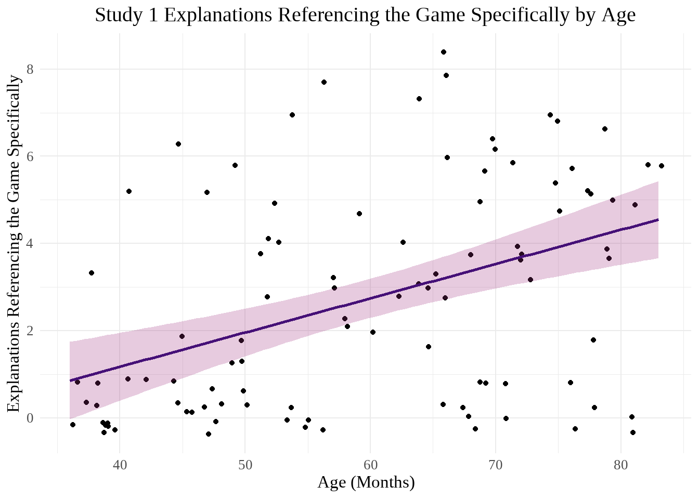
Correlations
Status
seas_separated <- seas_separated |> #adding status total score to this dataset
mutate(
status_1 = if_else(status_1 == "excluder", 1, 0),
status_2 = if_else(status_2 == "excluder", 1, 0),
status_3 = if_else(status_3 == "excluder", 1, 0),
status_4 = if_else(status_4 == "excluder", 1, 0),
status_total = status_1 + status_2 + status_3 + status_4
)
seas_count_status_cor_data <- seas_separated |>
select(status_total, ST_total:OR_total)
seas_count_status_cor_matrix <- rcorr(as.matrix(seas_count_status_cor_data), type = "spearman")
seas_count_status_correlation <- seas_count_status_cor_matrix$r[1, -1]
seas_count_status_p <- seas_count_status_cor_matrix$P[1, -1]
seas_status_degrees <- seas_count_status_cor_matrix$n[1, 1] - 2 #Confirmed ns the same within status
seas_count_status_df <- data.frame(rho = seas_count_status_correlation, p = seas_count_status_p)
seas_count_status_df <- seas_count_status_df |>
rownames_to_column(var = "variable") |>
mutate(
rho = signif(rho, 2),
p = signif(p, 2),
"Corrected p" = if_else(p * 16 > 1, 1.0, p * 16)
)
seas_count_status_table <- seas_count_status_df |>
gt(
rowname_col = "variable",
)|>
opt_stylize(style = 6, color = "blue") |>
tab_header(title = "Status Total & Explanation Type Frequency Correlations") |>
tab_style(
style = cell_text(weight = "bold"),
locations = cells_body(
columns = c(rho, p, "Corrected p"),
rows = p < 0.05
)
) |>
cols_align(
align = "center",
columns = everything()
) |>
tab_footnote(
"Corrections used the Bonferroni method, k = 16"
) |>
tab_footnote(
str_glue("Degrees of freedom = {seas_status_degrees}")
)
seas_count_status_table| Status Total & Explanation Type Frequency Correlations | |||
| rho | p | Corrected p | |
|---|---|---|---|
| ST_total | 0.0730 | 0.4700 | 1.0000 |
| VG_total | -0.2300 | 0.0220 | 0.3520 |
| SG_total | 0.3300 | 0.0007 | 0.0112 |
| EX_total | 0.1600 | 0.1000 | 1.0000 |
| IN_total | -0.0660 | 0.5100 | 1.0000 |
| NR_total | 0.1400 | 0.1700 | 1.0000 |
| MR_total | NA | NA | NA |
| AR_total | 0.0023 | 0.9800 | 1.0000 |
| EP_total | 0.0230 | 0.8200 | 1.0000 |
| EN_total | -0.1500 | 0.1300 | 1.0000 |
| PR_total | 0.0120 | 0.9100 | 1.0000 |
| EM_total | -0.0480 | 0.6300 | 1.0000 |
| MT_total | -0.1200 | 0.2400 | 1.0000 |
| FR_total | -0.1300 | 0.2000 | 1.0000 |
| PS_total | 0.2800 | 0.0055 | 0.0880 |
| OR_total | -0.2000 | 0.0410 | 0.6560 |
| Corrections used the Bonferroni method, k = 16 | |||
| Degrees of freedom = 98 | |||
gtsave(seas_count_status_table, "02-SEAS-Study-1-Explanatory-Analyses_files/figure-html/seas_count_status_table.png")file:///C:/Users/siobh/AppData/Local/Temp/RtmpSo8jQY/filefa5823206b70.html screenshot completedThe frequencies of responses referencing Vague Game, Specific Game, Possession, and Other each displayed a significant correlation with the number of times a participant selected the excluder as being in charge. VG: rho = -0.23 (weak negative), p = 0.022, p with Bonferroni correction = 0.36. SG: rho = 0.33 (weak positive), p = 7^{-4}, p with Bonferroni correction = 0.011. PS: rho = 0.28 (weak positive), p = 0.0055, p with Bonferroni correction = 0.088. OR: rho = -0.2 (weak negative), p = 0.041, p with Bonferroni correction = 0.66.
Resources
seas_separated <- seas_separated |> #adding resource total score to this dataset
mutate(
resource_1 = if_else(resource_1 == "excluder", 1, 0, NA), #One participant who did not answer the first resource question
resource_2 = if_else(resource_2 == "excluder", 1, 0),
resource_3 = if_else(resource_3 == "excluder", 1, 0),
resource_4 = if_else(resource_4 == "excluder", 1, 0),
resource_total = resource_1 + resource_2 + resource_3 + resource_4
)
seas_count_resource_cor_data <- seas_separated |>
select(resource_total, ST_total:OR_total)
seas_count_resource_cor_matrix <- rcorr(as.matrix(seas_count_resource_cor_data), type = "spearman")
seas_count_resource_correlation <- seas_count_resource_cor_matrix$r[1, -1]
seas_count_resource_p <- seas_count_resource_cor_matrix$P[1, -1]
seas_resource_degrees <- seas_count_resource_cor_matrix$n[1, 1] - 2
seas_count_resource_df <- data.frame(rho = seas_count_resource_correlation, p = seas_count_resource_p)
seas_count_resource_df <- seas_count_resource_df |>
rownames_to_column(var = "variable") |>
mutate(
rho = signif(rho, 2),
p = signif(p, 2),
"Corrected p" = if_else(p * 16 > 1, 1.0, p * 16)
)
seas_count_resource_table <- seas_count_resource_df |>
gt(
rowname_col = "variable",
)|>
opt_stylize(style = 6, color = "pink") |>
tab_header(title = "Resource Total & Explanation Type Frequency Correlations") |>
tab_style(
style = cell_text(weight = "bold"),
locations = cells_body(
columns = c(rho, p, "Corrected p"),
rows = p < 0.05
)
) |>
cols_align(
align = "center",
columns = everything()
) |>
tab_footnote(
"Corrections used the Bonferroni method, k = 16"
) |>
tab_footnote(
str_glue("Degrees of freedom = {seas_resource_degrees}")
)
seas_count_resource_table| Resource Total & Explanation Type Frequency Correlations | |||
| rho | p | Corrected p | |
|---|---|---|---|
| ST_total | -0.041 | 6.9e-01 | 1.000000 |
| VG_total | 0.044 | 6.7e-01 | 1.000000 |
| SG_total | 0.410 | 3.2e-05 | 0.000512 |
| EX_total | 0.230 | 2.5e-02 | 0.400000 |
| IN_total | -0.092 | 3.7e-01 | 1.000000 |
| NR_total | 0.058 | 5.7e-01 | 1.000000 |
| MR_total | NA | NA | NA |
| AR_total | -0.043 | 6.7e-01 | 1.000000 |
| EP_total | -0.170 | 1.0e-01 | 1.000000 |
| EN_total | 0.110 | 2.9e-01 | 1.000000 |
| PR_total | -0.200 | 5.2e-02 | 0.832000 |
| EM_total | 0.066 | 5.2e-01 | 1.000000 |
| MT_total | 0.094 | 3.6e-01 | 1.000000 |
| FR_total | 0.160 | 1.2e-01 | 1.000000 |
| PS_total | 0.200 | 4.2e-02 | 0.672000 |
| OR_total | 0.084 | 4.1e-01 | 1.000000 |
| Corrections used the Bonferroni method, k = 16 | |||
| Degrees of freedom = 97 | |||
gtsave(seas_count_resource_table, "02-SEAS-Study-1-Explanatory-Analyses_files/figure-html/seas_count_resource_table.png")file:///C:/Users/siobh/AppData/Local/Temp/RtmpSo8jQY/filefa586842229c.html screenshot completedThe frequencies of responses referencing Specific Game, Exclusion, and Possession each displayed a significant correlation with the number of times a participant selected the excluder as having more resources. SG: rho = 0.41 (moderate positive), p = 3.2^{-5}, p with Bonferroni correction = 5.1^{-4}. EX: rho = 0.23 (weak positive), p = 0.025, p with Bonferroni correction = 0.39. PS: rho = 0.2 (weak positive), p = 0.042, p with Bonferroni correction = 0.67.
Did a Ppt Use Type of Explanation in Any Response?
Initial Graphs
seas_pivoted <- seas_pivoted |>
mutate(
present = if_else(total == 0, 0, 1)
)
seas_pivoted |>
ggplot(aes(x = age_months, y = present, color = explanation_type, fill = explanation_type)) +
geom_point(position = position_jitter(height = .15)) +
geom_smooth(
method = "glm",
method.args = list(family = "binomial"),
alpha = 0.2
) +
scale_fill_manual(values = wo_black) +
scale_color_manual(values = wo_black) +
facet_wrap(~explanation_type) +
labs(
title = "Study 1 Presence of Explanation Types",
x = "Age (Months)",
y = "Responses Present Across Explanation Questions",
color = "Explanations",
fill = "Explanations"
) +
theme_minimal() +
theme(
plot.title = element_text(hjust = 0.5, size = 30),
legend.title = element_text(size = 20),
legend.text = element_text(size = 15),
text = element_text(family = "serif", size = 25)
) +
scale_y_continuous(breaks = c(0, 1), labels = (c("Absent", "Present")))`geom_smooth()` using formula = 'y ~ x'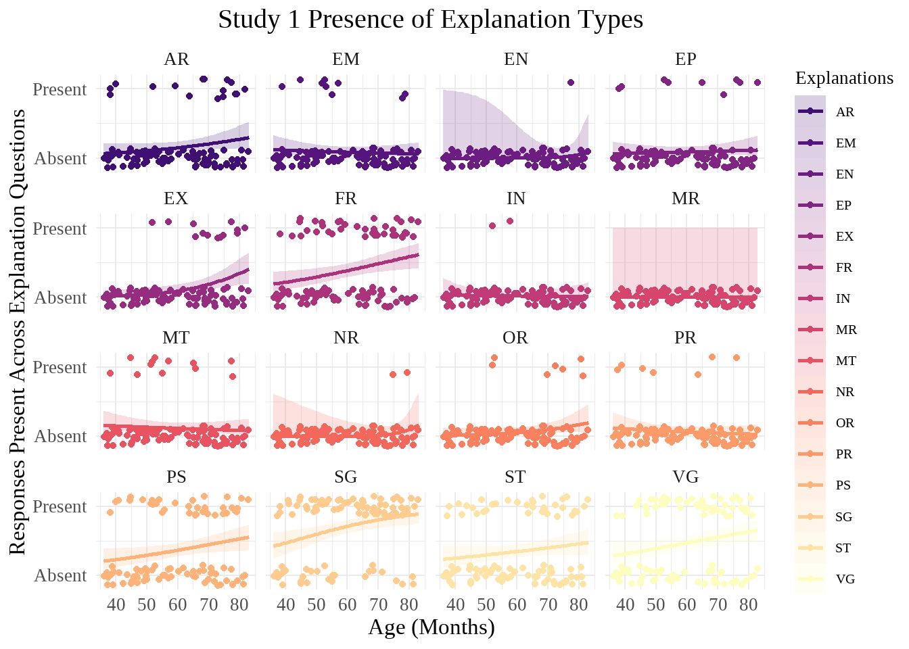
GLMMs
Exclusion
#Does the presence of explanations that reference exclusion change with age?
seas_EX_present_age <- glm(
EX_present ~ age_months,
data = seas_separated
)
summary(seas_EX_present_age)
Call:
glm(formula = EX_present ~ age_months, data = seas_separated)
Coefficients:
Estimate Std. Error t value Pr(>|t|)
(Intercept) -0.318887 0.143553 -2.221 0.0286 *
age_months 0.007537 0.002348 3.209 0.0018 **
---
Signif. codes: 0 '***' 0.001 '**' 0.01 '*' 0.05 '.' 0.1 ' ' 1
(Dispersion parameter for gaussian family taken to be 0.1044322)
Null deviance: 11.310 on 99 degrees of freedom
Residual deviance: 10.234 on 98 degrees of freedom
AIC: 61.846
Number of Fisher Scoring iterations: 2summary(seas_EX_present_age)$coefficients[2,4] * 7 #Bonferroni-corrected p[1] 0.01259117confint(seas_EX_present_age, method = "Wald", parm = "age_months") #fixed effect confidence intervalWaiting for profiling to be done... 2.5 % 97.5 %
0.002933998 0.012139425 exp(coef(seas_EX_present_age)) #odds ratio(Intercept) age_months
0.726958 1.007565 Whether participants reference exclusion at least once in the study significantly differs with age, t = 3.21, p = 0.0018, and this survives a Bonferroni correction for multiple comparisons (p = 0.013)
EX_present_age_scatter <- seas_separated |>
ggplot(aes(x = age_months, y = EX_present)) +
geom_jitter() +
geom_smooth(
method = "glm",
method.args = list(family = "binomial"),
formula = y ~ x,
color = magma_colors[3],
fill = magma_colors[5],
alpha = 0.25) +
geom_hline(yintercept = 0.5, linetype = "dashed", linewidth = 1, alpha = 0.5) +
labs(
title = "Study 1 Explanations Referencing Exclusion by Age",
x = "Age (Months)",
y = NULL
) +
theme_minimal() +
theme(
plot.title = element_text(hjust = 0.5, size = 30),
text = element_text(family = "serif", size = 25)
) +
scale_y_continuous(
breaks = c(0,1),
labels = c("Not Referenced", "Exclusion Referenced")
)
EX_present_age_scatter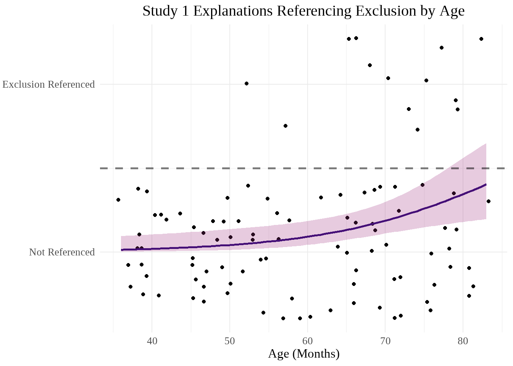
Friends
#Does the presence of explanations that reference preferences change with age?
seas_FR_present_age <- glm(
FR_present ~ age_months,
data = seas_separated
)
summary(seas_FR_present_age)
Call:
glm(formula = FR_present ~ age_months, data = seas_separated)
Coefficients:
Estimate Std. Error t value Pr(>|t|)
(Intercept) -0.160918 0.211283 -0.762 0.44811
age_months 0.009250 0.003456 2.676 0.00873 **
---
Signif. codes: 0 '***' 0.001 '**' 0.01 '*' 0.05 '.' 0.1 ' ' 1
(Dispersion parameter for gaussian family taken to be 0.2262225)
Null deviance: 23.79 on 99 degrees of freedom
Residual deviance: 22.17 on 98 degrees of freedom
AIC: 139.14
Number of Fisher Scoring iterations: 2summary(seas_FR_present_age)$coefficients[2,4] * 7 #Bonferroni-corrected p[1] 0.06110586Whether participants reference friends at least once in the study significantly differs with age, t = 2.68, p = 0.0087, but this does not survive correction (p = 0.061).
FR_present_age_scatter <- seas_separated |>
ggplot(aes(x = age_months, y = FR_present)) +
geom_jitter() +
geom_smooth(
method = "glm",
method.args = list(family = "binomial"),
formula = y ~ x,
color = magma_colors[3],
fill = magma_colors[5],
alpha = 0.25) +
geom_hline(yintercept = 0.5, linetype = "dashed", linewidth = 1, alpha = 0.5) +
labs(
title = "Study 1 Explanations Referencing Friendship by Age",
x = "Age (Months)",
y = NULL
) +
theme_minimal() +
theme(
plot.title = element_text(hjust = 0.5, size = 30),
text = element_text(family = "serif", size = 25)
) +
scale_y_continuous(
breaks = c(0,1),
labels = c("Not Referenced", "Friendship Referenced")
)
FR_present_age_scatter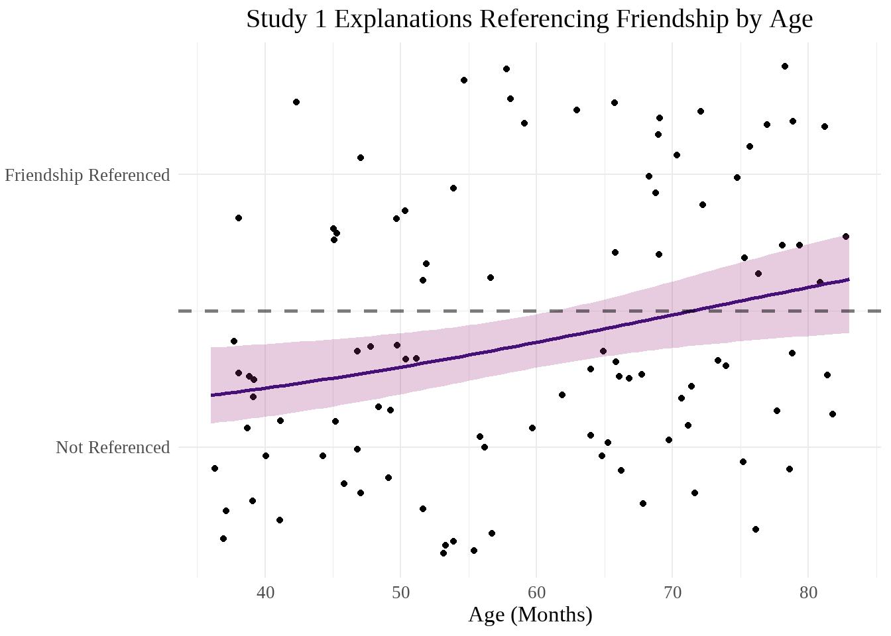
Possessions
#Does the presence of explanations that reference possessions change with age?
seas_PS_present_age <- glm(
PS_present ~ age_months,
data = seas_separated
)
summary(seas_PS_present_age)
Call:
glm(formula = PS_present ~ age_months, data = seas_separated)
Coefficients:
Estimate Std. Error t value Pr(>|t|)
(Intercept) -0.074357 0.211693 -0.351 0.7262
age_months 0.007461 0.003463 2.154 0.0337 *
---
Signif. codes: 0 '***' 0.001 '**' 0.01 '*' 0.05 '.' 0.1 ' ' 1
(Dispersion parameter for gaussian family taken to be 0.2271016)
Null deviance: 23.310 on 99 degrees of freedom
Residual deviance: 22.256 on 98 degrees of freedom
AIC: 139.53
Number of Fisher Scoring iterations: 2summary(seas_PS_present_age)$coefficients[2,4] * 7 #Bonferroni-corrected p[1] 0.2356405Whether participants reference possessions at least once in the study appears to significantly differ with age, t = 2.15, p = 0.034, but does not survive correction (p = 0.24).
PS_present_age_scatter <- seas_separated |>
ggplot(aes(x = age_months, y = PS_present)) +
geom_jitter() +
geom_smooth(
method = "glm",
method.args = list(family = "binomial"),
formula = y ~ x,
color = magma_colors[3],
fill = magma_colors[5],
alpha = 0.25) +
geom_hline(yintercept = 0.5, linetype = "dashed", linewidth = 1, alpha = 0.5) +
labs(
title = "Study 1 Explanations Referencing Possession by Age",
x = "Age (Months)",
y = NULL
) +
theme_minimal() +
theme(
plot.title = element_text(hjust = 0.5, size = 30),
text = element_text(family = "serif", size = 25)
) +
scale_y_continuous(
breaks = c(0,1),
labels = c("Not Referenced", "Possession Referenced")
)
PS_present_age_scatter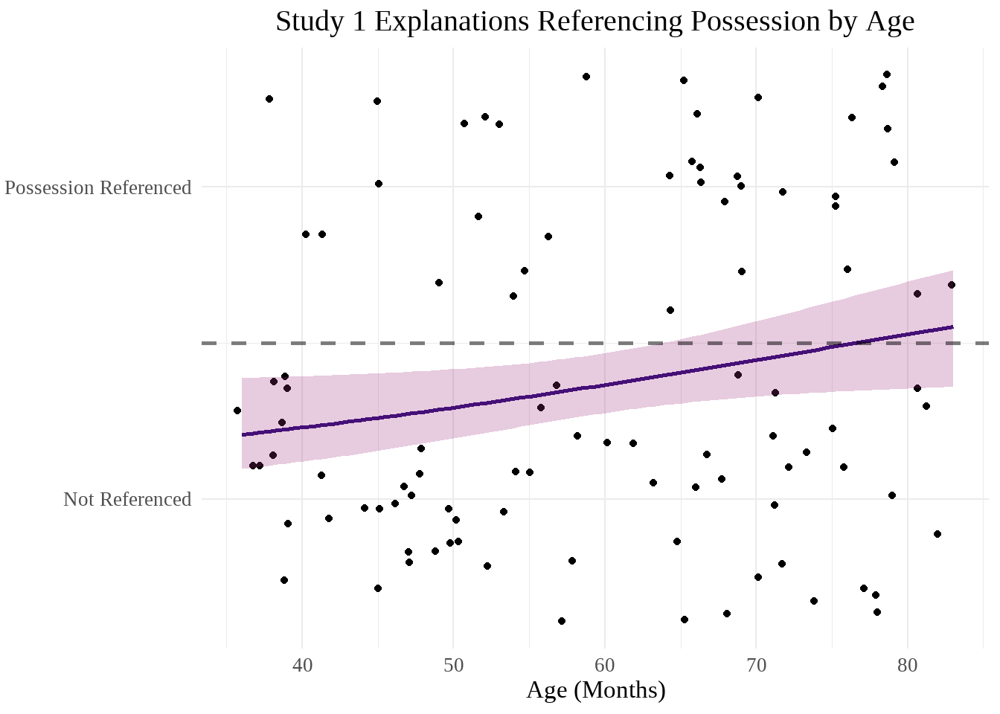
Specific Game
#Does the presence of explanations that reference the game specifically change with age?
seas_SG_present_age <- glm(
SG_present ~ age_months,
data = seas_separated
)
summary(seas_SG_present_age)
Call:
glm(formula = SG_present ~ age_months, data = seas_separated)
Coefficients:
Estimate Std. Error t value Pr(>|t|)
(Intercept) 0.075549 0.197515 0.382 0.70292
age_months 0.010317 0.003231 3.193 0.00189 **
---
Signif. codes: 0 '***' 0.001 '**' 0.01 '*' 0.05 '.' 0.1 ' ' 1
(Dispersion parameter for gaussian family taken to be 0.1976997)
Null deviance: 21.390 on 99 degrees of freedom
Residual deviance: 19.375 on 98 degrees of freedom
AIC: 125.67
Number of Fisher Scoring iterations: 2summary(seas_SG_present_age)$coefficients[2,4] * 7 #Bonferroni corrected p[1] 0.01325924confint(seas_SG_present_age, method = "Wald", parm = "age_months") #fixed effect confidence intervalWaiting for profiling to be done... 2.5 % 97.5 %
0.003983652 0.016649364 exp(coef(seas_SG_present_age)) #odds ratio(Intercept) age_months
1.078476 1.010370 Whether participants reference the game specifically at least once in the study significantly differs with age, t = 3.19, p = 0.0019, and survives correction (p = 0.013).
SG_present_age_scatter <- seas_separated |>
ggplot(aes(x = age_months, y = SG_present)) +
geom_jitter() +
geom_smooth(
method = "glm",
method.args = list(family = "binomial"),
formula = y ~ x,
color = magma_colors[3],
fill = magma_colors[5],
alpha = 0.25) +
geom_hline(yintercept = 0.5, linetype = "dashed", linewidth = 1, alpha = 0.5) +
labs(
title = "Study 1 Explanations Referencing the Game Specifically by Age",
x = "Age (Months)",
y = NULL
) +
theme_minimal() +
theme(
plot.title = element_text(hjust = 0.5, size = 30),
text = element_text(family = "serif", size = 25)
) +
scale_y_continuous(
breaks = c(0,1),
labels = c("Not Referenced", "Specific Game Referenced")
)
SG_present_age_scatter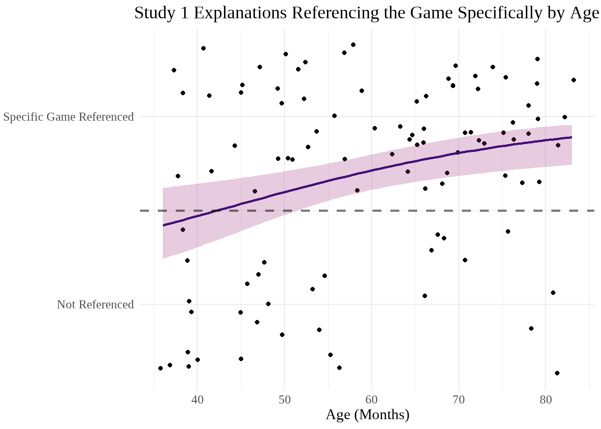
Superficial Traits
#Does the presence of explanations that reference superficial traits change with age?
seas_ST_present_age <- glm(
ST_present ~ age_months,
data = seas_separated
)
summary(seas_ST_present_age)
Call:
glm(formula = ST_present ~ age_months, data = seas_separated)
Coefficients:
Estimate Std. Error t value Pr(>|t|)
(Intercept) 0.043655 0.211660 0.206 0.837
age_months 0.005143 0.003463 1.485 0.141
(Dispersion parameter for gaussian family taken to be 0.2270309)
Null deviance: 22.750 on 99 degrees of freedom
Residual deviance: 22.249 on 98 degrees of freedom
AIC: 139.5
Number of Fisher Scoring iterations: 2Whether participants reference superficial traits at least once in the study does not significantly differ with age, t = 1.49, p = 0.14.
ST_present_age_scatter <- seas_separated |>
ggplot(aes(x = age_months, y = ST_present)) +
geom_jitter() +
geom_smooth(
method = "glm",
method.args = list(family = "binomial"),
formula = y ~ x,
color = magma_colors[3],
fill = magma_colors[5],
alpha = 0.25) +
geom_hline(yintercept = 0.5, linetype = "dashed", linewidth = 1, alpha = 0.5) +
labs(
title = "Study 1 Explanations Referencing Superficial Traits by Age",
x = "Age (Months)",
y = NULL
) +
theme_minimal() +
theme(
plot.title = element_text(hjust = 0.5, size = 30),
text = element_text(family = "serif", size = 25)
) +
scale_y_continuous(
breaks = c(0,1),
labels = c("Not Referenced", "Superficial Traits Referenced")
)
ST_present_age_scatter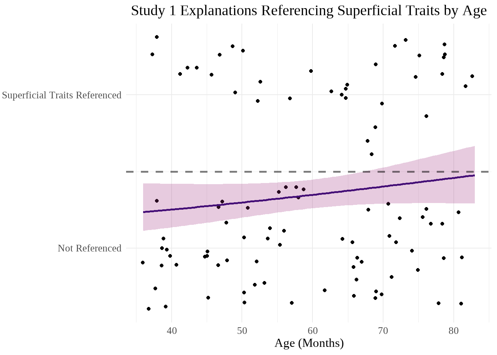
Vague Game
#Does the presence of explanations that reference the game vaguely change with age?
seas_VG_present_age <- glm(
VG_present ~ age_months,
data = seas_separated
)
summary(seas_VG_present_age)
Call:
glm(formula = VG_present ~ age_months, data = seas_separated)
Coefficients:
Estimate Std. Error t value Pr(>|t|)
(Intercept) -0.010213 0.218356 -0.047 0.9628
age_months 0.008063 0.003572 2.257 0.0262 *
---
Signif. codes: 0 '***' 0.001 '**' 0.01 '*' 0.05 '.' 0.1 ' ' 1
(Dispersion parameter for gaussian family taken to be 0.2416224)
Null deviance: 24.910 on 99 degrees of freedom
Residual deviance: 23.679 on 98 degrees of freedom
AIC: 145.73
Number of Fisher Scoring iterations: 2summary(seas_VG_present_age)$coefficients[2,4] * 7 #Bonferroni-corrected p[1] 0.183526Whether participants reference the game vaguely at least once in the study appeared to significantly differ with age, t = 2.26, p = 0.026, but did not survive correction (p = 0.18).
VG_present_age_scatter <- seas_separated |>
ggplot(aes(x = age_months, y = VG_present)) +
geom_jitter() +
geom_smooth(
method = "glm",
method.args = list(family = "binomial"),
formula = y ~ x,
color = magma_colors[3],
fill = magma_colors[5],
alpha = 0.25) +
geom_hline(yintercept = 0.5, linetype = "dashed", linewidth = 1, alpha = 0.5) +
labs(
title = "Study 1 Explanations Referencing the Game Vaguely by Age",
x = "Age (Months)",
y = NULL
) +
theme_minimal() +
theme(
plot.title = element_text(hjust = 0.5, size = 30),
text = element_text(family = "serif", size = 25)
) +
scale_y_continuous(
breaks = c(0,1),
labels = c("Not Referenced", "Vague Game Referenced")
)
VG_present_age_scatter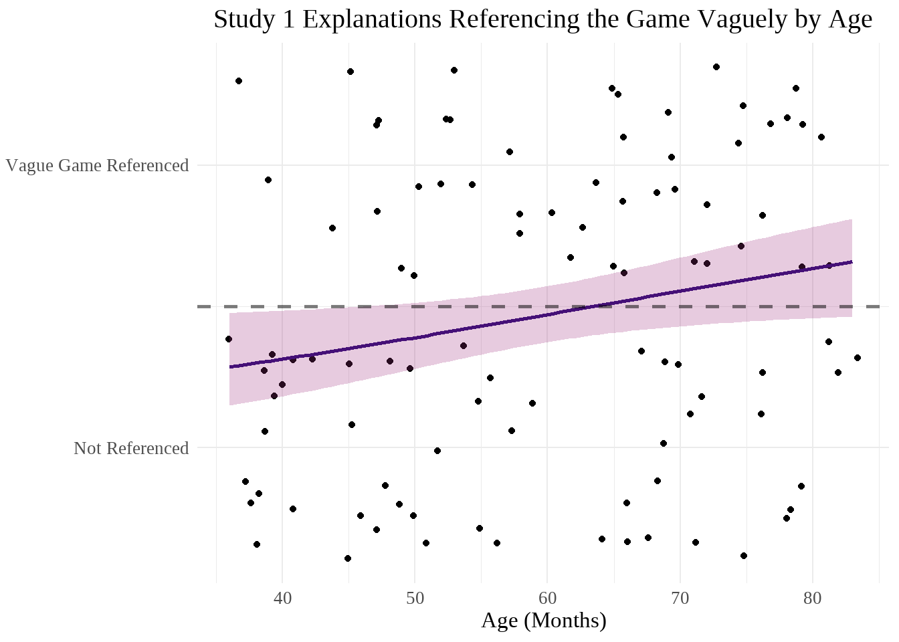
Correlations
Status
seas_present_status_cor_data <- seas_separated |>
select(status_total, ST_present:OR_present)
seas_present_status_cor_matrix <- rcorr(as.matrix(seas_present_status_cor_data), type = "spearman")
seas_present_status_correlation <- seas_present_status_cor_matrix$r[1, -1]
seas_present_status_p <- seas_present_status_cor_matrix$P[1, -1]
seas_present_status_df <- data.frame(rho = seas_present_status_correlation, p = seas_present_status_p)
seas_present_status_df <- seas_present_status_df |>
rownames_to_column(var = "variable") |>
mutate(
rho = signif(rho, 2),
p = signif(p, 2),
"Corrected p" = if_else(p * 16 > 1, 1.0, p * 16)
)
seas_present_status_table <- seas_present_status_df |>
gt(
rowname_col = "variable",
)|>
opt_stylize(style = 6, color = "blue") |>
tab_header(title = "Status Total & Explanation Type Presence Correlations") |>
tab_style(
style = cell_text(weight = "bold"),
locations = cells_body(
columns = c(rho, p, "Corrected p"),
rows = p < 0.05
)
) |>
cols_align(
align = "center",
columns = everything()
) |>
tab_footnote(
"Corrections used the Bonferroni method, k = 16"
) |>
tab_footnote(
str_glue("Degrees of freedom = {seas_status_degrees}")
)
seas_present_status_table| Status Total & Explanation Type Presence Correlations | |||
| rho | p | Corrected p | |
|---|---|---|---|
| ST_present | 0.050 | 0.6200 | 1.0000 |
| VG_present | -0.120 | 0.2300 | 1.0000 |
| SG_present | 0.270 | 0.0056 | 0.0896 |
| EX_present | 0.160 | 0.1200 | 1.0000 |
| IN_present | -0.066 | 0.5100 | 1.0000 |
| NR_present | 0.140 | 0.1700 | 1.0000 |
| MR_present | NA | NA | NA |
| AR_present | 0.015 | 0.8800 | 1.0000 |
| EP_present | 0.022 | 0.8300 | 1.0000 |
| EN_present | -0.150 | 0.1300 | 1.0000 |
| PR_present | 0.010 | 0.9200 | 1.0000 |
| EM_present | -0.045 | 0.6500 | 1.0000 |
| MT_present | -0.120 | 0.2300 | 1.0000 |
| FR_present | -0.140 | 0.1500 | 1.0000 |
| PS_present | 0.250 | 0.0110 | 0.1760 |
| OR_present | -0.200 | 0.0430 | 0.6880 |
| Corrections used the Bonferroni method, k = 16 | |||
| Degrees of freedom = 98 | |||
gtsave(seas_present_status_table, "02-SEAS-Study-1-Explanatory-Analyses_files/figure-html/seas_present_status_table.png")file:///C:/Users/siobh/AppData/Local/Temp/RtmpSo8jQY/filefa5865e74210.html screenshot completedThe frequencies of responses referencing Specific Game, Possession, and Other each displayed a significant correlation with the number of times a participant selected the excluder as being in charge. SG: rho = 0.27 (weak positive), p = 0.0056, p with Bonferroni correction = 0.09. PS: rho = 0.25 (weak positive), p = 0.011, p with Bonferroni correction = 0.18. OR: rho = -0.2 (weak negative), p = 0.043, p with Bonferroni correction = 0.68.
Resources
seas_present_resource_cor_data <- seas_separated |>
select(resource_total, ST_present:OR_present)
seas_present_resource_cor_matrix <- rcorr(as.matrix(seas_present_resource_cor_data), type = "spearman")
seas_present_resource_correlation <- seas_present_resource_cor_matrix$r[1, -1]
seas_present_resource_p <- seas_present_resource_cor_matrix$P[1, -1]
seas_present_resource_df <- data.frame(rho = seas_present_resource_correlation, p = seas_present_resource_p)
seas_present_resource_df <- seas_present_resource_df |>
rownames_to_column(var = "variable") |>
mutate(
rho = signif(rho, 2),
p = signif(p, 2),
"Corrected p" = if_else(p * 16 > 1, 1.0, p * 16)
)
seas_present_resource_table <- seas_present_resource_df |>
gt(
rowname_col = "variable",
)|>
opt_stylize(style = 6, color = "pink") |>
tab_header(title = "Resource Total & Explanation Type Presence Correlations") |>
tab_style(
style = cell_text(weight = "bold"),
locations = cells_body(
columns = c(rho, p, "Corrected p"),
rows = p < 0.05
)
) |>
cols_align(
align = "center",
columns = everything()
) |>
tab_footnote(
"Corrections used the Bonferroni method, k = 16"
) |>
tab_footnote(
str_glue("Degrees of freedom = {seas_resource_degrees}")
)
seas_present_resource_table| Resource Total & Explanation Type Presence Correlations | |||
| rho | p | Corrected p | |
|---|---|---|---|
| ST_present | -0.039 | 0.70000 | 1.00000 |
| VG_present | 0.062 | 0.54000 | 1.00000 |
| SG_present | 0.350 | 0.00046 | 0.00736 |
| EX_present | 0.230 | 0.02100 | 0.33600 |
| IN_present | -0.092 | 0.37000 | 1.00000 |
| NR_present | 0.058 | 0.57000 | 1.00000 |
| MR_present | NA | NA | NA |
| AR_present | -0.051 | 0.62000 | 1.00000 |
| EP_present | -0.170 | 0.09700 | 1.00000 |
| EN_present | 0.110 | 0.29000 | 1.00000 |
| PR_present | -0.190 | 0.05900 | 0.94400 |
| EM_present | 0.063 | 0.54000 | 1.00000 |
| MT_present | 0.097 | 0.34000 | 1.00000 |
| FR_present | 0.170 | 0.09600 | 1.00000 |
| PS_present | 0.220 | 0.02700 | 0.43200 |
| OR_present | 0.087 | 0.39000 | 1.00000 |
| Corrections used the Bonferroni method, k = 16 | |||
| Degrees of freedom = 97 | |||
gtsave(seas_present_resource_table, "02-SEAS-Study-1-Explanatory-Analyses_files/figure-html/seas_present_resource_table.png")file:///C:/Users/siobh/AppData/Local/Temp/RtmpSo8jQY/filefa5811bb7661.html screenshot completedThe frequencies of responses referencing Specific Game, Exclusion, and Possession each displayed a significant correlation with the number of times a participant selected the excluder as having more resources. SG: rho = 0.35 (moderate positive), p = 4.6^{-4}, p with Bonferroni correction = 0.0074. EX: rho = 0.23 (weak positive), p = 0.021, p with Bonferroni correction = 0.34. PS: rho = 0.22 (weak positive), p = 0.027, p with Bonferroni correction = 0.43.
Word Count
Graphs
#Scatterplot of total word count by age
seas |>
rowwise() |>
mutate(
word_total = sum(c_across(contains("word"))) #could remove NAs from this step, but it's actually probably better to drop NAs from the scatter bc don't know how many words MS people would have
) |>
ungroup() |>
ggplot(aes(x = age_months, y = word_total)) +
geom_point() +
geom_smooth(
method = "glm",
formula = y ~ x,
color = magma_colors[3],
fill = magma_colors[5],
alpha = 0.25) +
labs(
title = "Study 1 Explanation Total Word Count by Age",
x = "Age (Months)",
y = "Word Count"
) +
theme_minimal() +
theme(
plot.title = element_text(hjust = 0.5, size = 30),
text = element_text(family = "serif", size = 25)
)Warning: Removed 13 rows containing non-finite outside the scale range
(`stat_smooth()`).Warning: Removed 13 rows containing missing values or values outside the scale range
(`geom_point()`).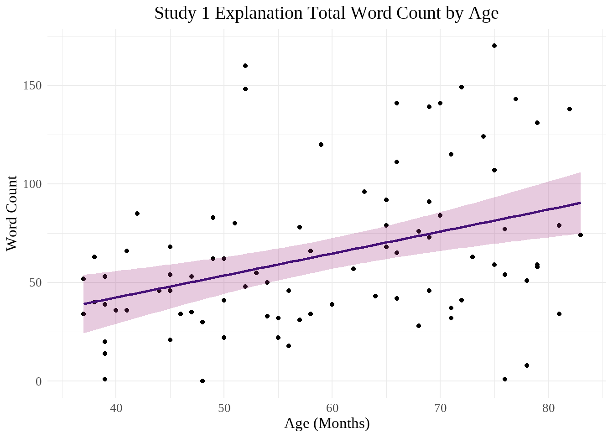
Analyses
seas_wordtot <- seas |>
rowwise() |>
mutate(
word_total = sum(c_across(contains("word")))) |>
filter(!is.na(word_total))
seas_word_glm <- glm(
word_total ~ age_months,
data = seas_wordtot
)
summary(seas_word_glm)
Call:
glm(formula = word_total ~ age_months, data = seas_wordtot)
Coefficients:
Estimate Std. Error t value Pr(>|t|)
(Intercept) -2.0367 17.6150 -0.116 0.908224
age_months 1.1139 0.2896 3.846 0.000232 ***
---
Signif. codes: 0 '***' 0.001 '**' 0.01 '*' 0.05 '.' 0.1 ' ' 1
(Dispersion parameter for gaussian family taken to be 1350.437)
Null deviance: 134759 on 86 degrees of freedom
Residual deviance: 114787 on 85 degrees of freedom
AIC: 877.98
Number of Fisher Scoring iterations: 2confint(seas_word_glm, method = "Wald", parm = "age_months") #fixed effect confidence intervalWaiting for profiling to be done... 2.5 % 97.5 %
0.5461778 1.6815483 exp(coef(seas_word_glm)) #odds ratio(Intercept) age_months
0.1304603 3.0461029 The number of words used by participants significantly differs based on age, t = 3.85, p = 2.3^{-4}.